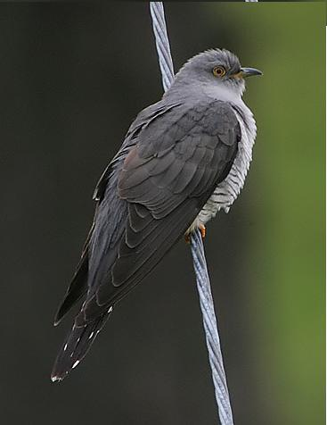
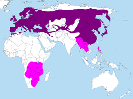

Le Coucou
| Taille: 30 cm | Poids: 110 g |
| Famille: Cuculidae | Ordre: Cuculiformes |
| Classe: Aves | Genre: Cuculus |
Biographie
Le Coucou gris (Cuculus canorus) est une espèce d'oiseau de la famille des cuculidés. Il doit son nom vernaculaire à son chant. Son comportement est caractérisé par la pratique du parasitisme de couvée. (cf. Wikipédia)
La principale source de nourriture du coucou est la chenille et le lombric qui peut repérer à plus de 15 mètres grâce à son exellente vue.
Dès son plus jeune âge, le coucou pratique le parasitisme de couvée (en gros c'est un pro du squatte). La maman coucou pond dans un nid d'une autre espèce pour que le bébé coucou puisse éclore avant les autres oisillons et les poussent en dehors du nid alors qui est encore aveugle. Cela focalise l'attention des parents adoptifs sur le bébé coucou, qui ne se gène pas pour s'en mettre plein la pense. Au bout d'un mois il devient deux fois plus gros que ses parents adoptifs.
Image de coucou à la naissance
Image d'un poussin coucou
Habitat et Migration
Le Coucou se trouve partout: dans les plaines, dans les vallées ou dans les montagnes.
C'est un oiseau migrateur qui se reproduit au printemps dans nos belle contrée d'Europe, d'Asie et au nord du Maghreb. Le coucou migre en Afrique pour passer son hiver au chaud et revient vers mars en Europe, ce qui annonce le début du printemps.
Près d'un quart des coucous de France ont disparu depuis les années disco (1990), ce qui est fait un espèce menacée.
